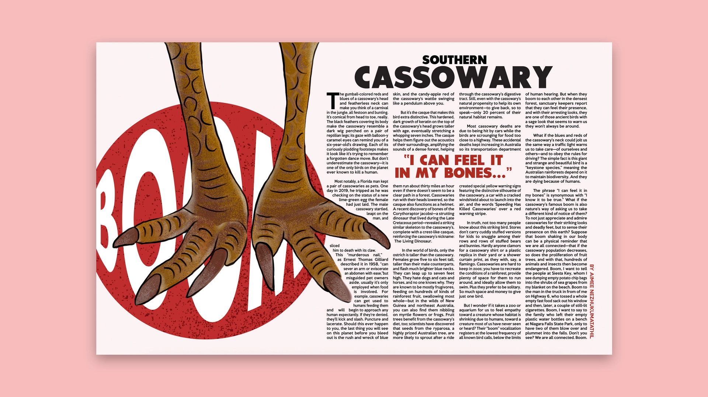
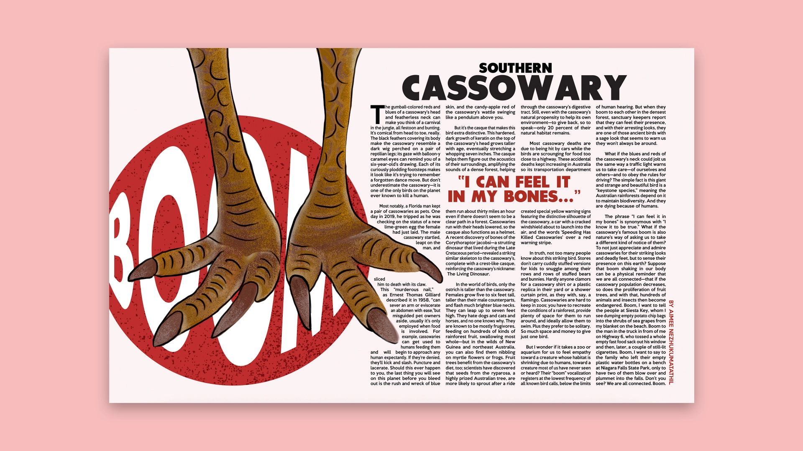

See More
The Southern Cassowary story was a project done in my indesign class. We were tasked to create 3 design style to relate to the story. I, first, explored reading the story, and then choosing the colors to go with. I also explored hierarchy and typefaces along the process. Instead of using actual photos of the birds, I decided to go for a editorial layout that consist illustration and vibrant colors.
 

See More